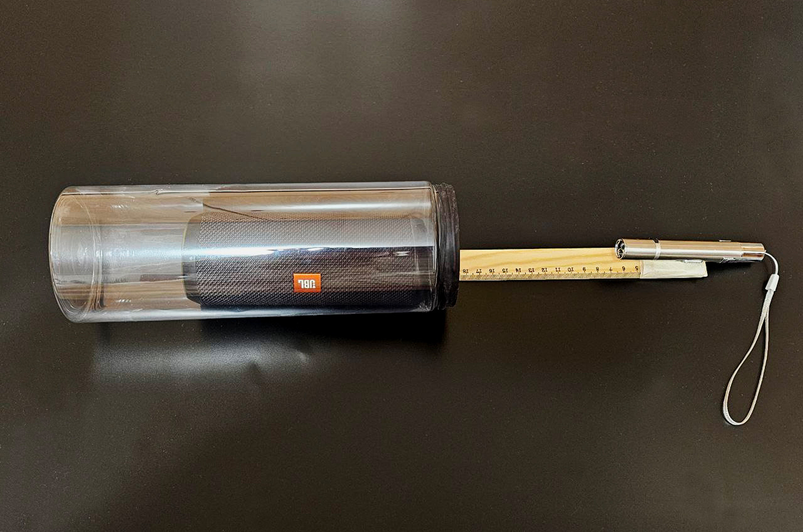
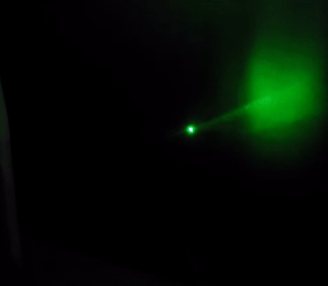

Лазерный эксперимент

Фигуры Лиссажу переводят звуки события в визуальную форму,
фиксируя колебания, которые существовали
как акустическое явление и могут быть заново пережиты через
изображение.
Лазерный эксперимент выступает медиатором: он не иллюстрирует
звук, а материализует его траекторию, делая невидимые волны наблюдаемыми.
